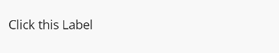

AnimationBehavior
The AnimationBehavior is a Behavior that provides the ability to animate any VisualElement it is attached to. Setting AnimateOnTap to true adds a TapGestureRecognizer to the VisualElement and triggers the associated animation when that recognizer detects that the user has tapped or clicked on the VisualElement.
The AnimationType property is required to be set, possible options for this can be found at Animations.
Important
The .NET MAUI Community Toolkit Behaviors do not set the BindingContext of a behavior, because behaviors can be shared and applied to multiple controls through styles. For more information refer to .NET MAUI Behaviors
Syntax
The following examples show how to add the AnimationBehavior to a Label and use the FadeAnimation to animate a change in opacity.
XAML
Including the XAML namespace
In order to use the toolkit in XAML the following xmlns needs to be added into your page or view:
xmlns:toolkit="http://schemas.microsoft.com/dotnet/2022/maui/toolkit"
Therefore the following:
<ContentPage
x:Class="CommunityToolkit.Maui.Sample.Pages.MyPage"
xmlns="http://schemas.microsoft.com/dotnet/2021/maui"
xmlns:x="http://schemas.microsoft.com/winfx/2009/xaml">
</ContentPage>
Would be modified to include the xmlns as follows:
<ContentPage
x:Class="CommunityToolkit.Maui.Sample.Pages.MyPage"
xmlns="http://schemas.microsoft.com/dotnet/2021/maui"
xmlns:x="http://schemas.microsoft.com/winfx/2009/xaml"
xmlns:toolkit="http://schemas.microsoft.com/dotnet/2022/maui/toolkit">
</ContentPage>
Using the AnimationBehavior
<ContentPage
xmlns="http://schemas.microsoft.com/dotnet/2021/maui"
xmlns:x="http://schemas.microsoft.com/winfx/2009/xaml"
xmlns:toolkit="http://schemas.microsoft.com/dotnet/2022/maui/toolkit"
x:Class="CommunityToolkit.Maui.Sample.Pages.Behaviors.AnimationBehaviorPage"
x:Name="Page">
<Label Text="Click this Label">
<Label.Behaviors>
<toolkit:AnimationBehavior AnimateOnTap="True">
<toolkit:AnimationBehavior.AnimationType>
<toolkit:FadeAnimation Opacity="0.5" />
</toolkit:AnimationBehavior.AnimationType>
</toolkit:AnimationBehavior>
</Label.Behaviors>
</Label>
</ContentPage>
C#
The AnimationBehavior can be used as follows in C#:
class AnimationBehaviorPage : ContentPage
{
public AnimationBehaviorPage()
{
var label = new Label
{
Text = "Click this Label"
};
var animationBehavior = new AnimationBehavior
{
AnimateOnTap = true,
AnimationType = new FadeAnimation
{
Opacity = 0.5
}
};
label.Behaviors.Add(animationBehavior);
Content = label;
}
}
C# Markup
Our CommunityToolkit.Maui.Markup package provides a much more concise way to use this Behavior in C#.
using CommunityToolkit.Maui.Markup;
class AnimationBehaviorPage : ContentPage
{
public AnimationBehaviorPage()
{
Content = new Label()
.Text("Click this label")
.Behaviors(new AnimationBehavior
{
AnimateOnTap = true,
AnimationType = new FadeAnimation
{
Opacity = 0.5
}
});
}
}
The following screenshot shows the resulting AnimationBehavior on Android:

Additional examples
Handling the user interaction
The AnimationBehavior responds to taps and clicks by the user, it is possible to handle this interaction through the Command property on the behavior.
The following example shows how to attach the AnimationBehavior to an Image and bind the Command property to a property on a view model.
View
<Image Source="thumbs-up.png" x:Name="ThumbsUpImage">
<Image.Behaviors>
<toolkit:AnimationBehavior
Command="{Binding ThumbsUpCommand}"
BindingContext="{Binding Path=BindingContext, Source={x:Reference ThumbsUpImage}, x:DataType=Image}">
<toolkit:AnimationBehavior.AnimationType>
<toolkit:FadeAnimation />
</toolkit:AnimationBehavior.AnimationType>
</toolkit:AnimationBehavior>
</Image.Behaviors>
</Image>
View model
public ICommand ThumbsUpCommand { get; }
public MyViewModel()
{
ThumbsUpCommand = new Command(() => OnThumbsUp())
}
public void OnThumbsUp()
{
// perform the thumbs up logic.
}
Programmatically triggering the animation
The AnimationBehavior provides the ability to trigger animations programmatically. The AnimateCommand can be executed to trigger the associated animation type.
The following example shows how to add the AnimationBehavior to an Entry, bind the AnimatedCommand and then execute the command from a view model.
View
<Entry Placeholder="First name (Required)"
Text="{Binding FirstName}"
x:Name="FirstNameEntry">
<Entry.Behaviors>
<toolkit:AnimationBehavior
AnimateCommand="{Binding TriggerAnimationCommand}"
BindingContext="{Binding Path=BindingContext, Source={x:Reference FirstNameEntry}, x:DataType=Entry}">
<toolkit:AnimationBehavior.AnimationType>
<toolkit:FadeAnimation />
</toolkit:AnimationBehavior.AnimationType>
</toolkit:AnimationBehavior>
</Entry.Behaviors>
</Entry>
View model
private string firstName;
public string FirstName
{
get => firstName;
set => SetProperty(ref firstName, value);
}
public ICommand TriggerAnimationCommand { get; set; }
public void Save()
{
if (string.IsNullOrEmpty(FirstName))
{
TriggerAnimationCommand.Execute(CancellationToken.None);
return;
}
// save code.
}
Note
The AnimateCommand property is read-only and expects a binding mode of BindingMode.OneWayToSource. You also do not need to assign a value to the command property in your view model (TriggerAnimationCommand in the example above), this is because the binding will assign the value to your property from the value created in the AnimationBehavior.
This provides the ability to trigger an animation from within a view model.
Triggering the animation from control events
The AnimationBehavior provides the same underlying features as the EventToCommandBehavior. Through the use of the EventName property, the associated animation type can be triggered when an event matching the supplied name is raised.
Using the following example animation implementation:
class SampleScaleToAnimation : BaseAnimation
{
public double Scale { get; set; }
public override Task Animate(VisualElement view) => view.ScaleTo(Scale, Length, Easing);
}
The following example shows how we can assign two AnimationBehavior instances to an Entry; one to trigger an animation when the Focused event is raised, and another to trigger a different animation when the Unfocused event is raised.
<Entry Placeholder="Animate on Focused and Unfocused">
<Entry.Behaviors>
<toolkit:AnimationBehavior EventName="Focused">
<toolkit:AnimationBehavior.AnimationType>
<behaviorPages:SampleScaleToAnimation
Easing="{x:Static Easing.Linear}"
Length="100"
Scale="1.05"/>
</toolkit:AnimationBehavior.AnimationType>
</toolkit:AnimationBehavior>
<toolkit:AnimationBehavior EventName="Unfocused">
<toolkit:AnimationBehavior.AnimationType>
<behaviorPages:SampleScaleToAnimation
Easing="{x:Static Easing.Linear}"
Length="100"
Scale="1"/>
</toolkit:AnimationBehavior.AnimationType>
</toolkit:AnimationBehavior>
</Entry.Behaviors>
</Entry>
Examples
You can find an example of this behavior in action in the .NET MAUI Community Toolkit Sample Application.
API
You can find the source code for AnimationBehavior over on the .NET MAUI Community Toolkit GitHub repository.